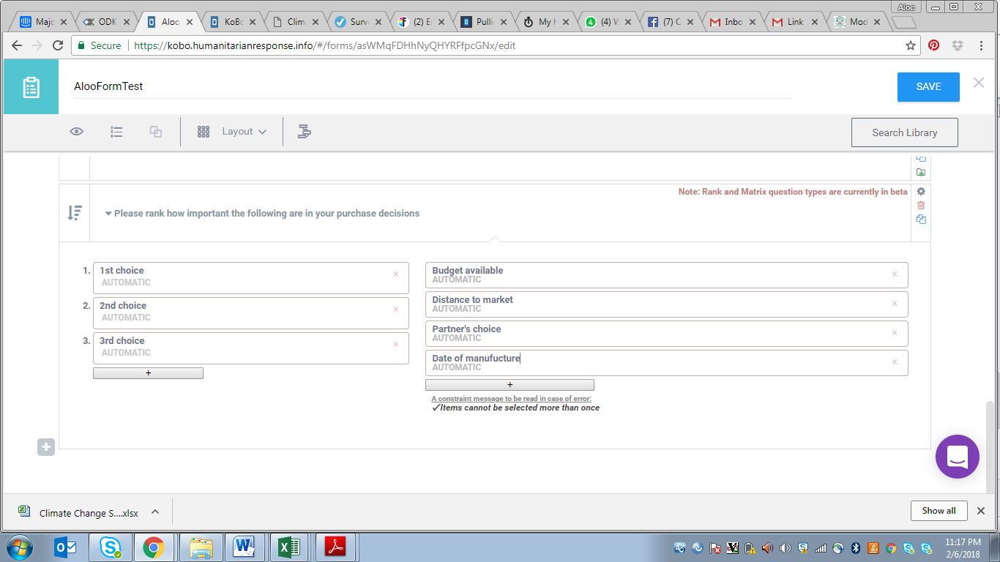

Rating vs Ranking Question Types¶
Difference between rating and ranking questions?
Often times, people use the terms ranking question and rating question interchangeably, when in fact there is a distinct difference between the two question types. A rating question asks survey respondents to compare different items using a common scale (e.g. “Please rate each of the following objects on a rating scale of 1-10, where 1 is ‘not at all important’ and 10 is ‘very important.’”). A ranking question on the other hand asks survey respondents to compare a list of different objects to one another (e.g. “Please rank each of the following items in order of importance with #1 being the most important object to #10 being the least important object.”). The Ranking question asks respondents to compare items to each other by placing them in order of preference. When analyzing ranking questions, an average ranking is calculated for each answer choice, allowing you to quickly evaluate the most preferred answer choice.
When should you use ranking or rating questions?
The choice of ranking or rating should be purely informed on the mode of analysis one needs to conduct. Note you can rate different components the same way, however when it comes to ranking you can’t give them the same rank.
How to add a ranking question in the Formbuilder
Add a question to the survey:

Select “ranking question”

Now you have a chance to add the different elements.

Example:

When you preview your form, the question will look like this:

Each choice will now offer all of the previous defined response options

However, respondents can only select each response option once.

How to add a Rating Question
You will need to create a question using the same process above

Select the option for Rating question and you will see the interface below

You can then type your questions and response options. You can add more of the same using the + button provided on the same

Kindly note you can change the values of your response options and questions to reflect what you want. You change them by replacing the grey text written automatic.

You can save your form and preview the same to see the effect.

If you have any questions or feedback on this article, please post about it on our community forum!